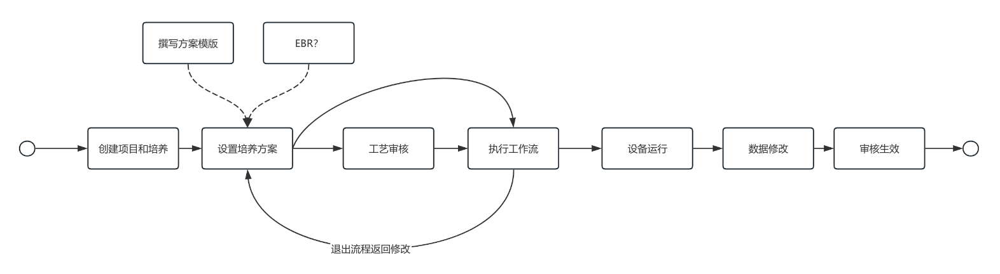
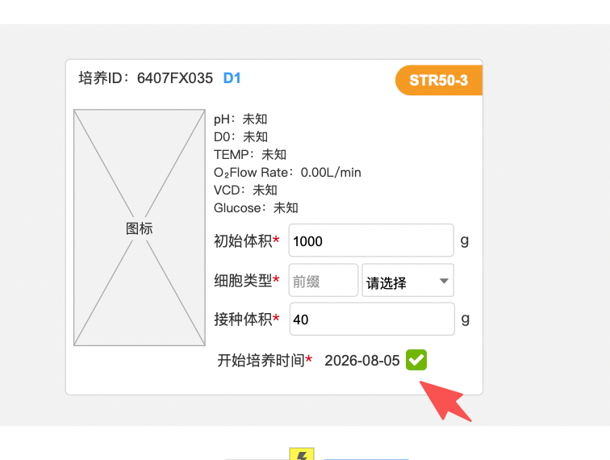

工艺流程的设置与修改
工作流启动前：在培养管理列表中进入修改培养中进行工作流开启前的预设
工作流启动后：在反应器详情中的工艺设置中修改
工作流完后：如对执行过的数字进行修改，区分字段类型进行修改，审核后生效
原系统
开始时间：开始细胞培养时间
结束时间：结束细胞培养时间
现系统：
开始时间：第一个流程开启时间（可能是config），根据实际操作记录
结束时间：最后一个流程结束时间（可能是澄清可能是结束培养）
开始培养：开始细胞培养时间，培养里设定date
结束培养：结束细胞培养时间，培养里设定date
实际开始培养时间：工作流中操作记录，date+time
实际培养结束时间：工作流中操作记录，date+time
时间明确后，关于培养的【已过期】与【已延期】状态的确认：
比如说今天是8月20日，甲有一个培养设置的开始时间是今天，乙有一个培养的开始时间设置的也是8月20日
1、甲昨天开启了工作流，进行了config，进入了培养中状态，但是今天还没开始接种，这种工作台标一个红❗️提醒今天要接种，然后甲今天一直没操作，明天系统把这个培养变成逾期，需要进入反应器修改一下培养的开始时间。
2、乙的培养一直没开启工作流，实验室工作台他绑定的空罐子可以给一个红❗️进行提醒，提醒今天赶紧把工作流启动起来，把config灌注培养基和开始培养今天都搞定，如果今天内没搞定，这个培养第二天直接过期，需要去培养列表里修改或删除。
设备的预约与占用逻辑
只要输入了培养的开始时间和结束时间，在这个培养结束、取消或删除之前，这个设备都会被独占
建议：
1、第一个工作流开启后培养就进入到培养中状态
2、第一个工作流开启后，培养中的罐子，如果细胞培养的开始时间和结束时间，出现延迟的情况下都标为逾期，需要用户进行修改后审核变成正常培养中状态。
3、选择要做的工作流 就算是麻烦也要预先填写方案，如果嫌写方案麻烦 可以不选这个流程节点
4、之前要求预设和修改走审核的信息 都不允许在工作流过程中进行修改

如下图，开始细胞培养的工作流中，不允许修改开始培养时间
以上是培养过程中的流程，主要说明三点
1、与EBR系统的交互在培养的方案撰写环节
2、在工作流的操作过程中，如果设计预设方案的信息，不允许在操作过程中修改
3、每一个工作流程节点，操作完成后，如果后续修改过程中的信息，需要单独走修改审核流程